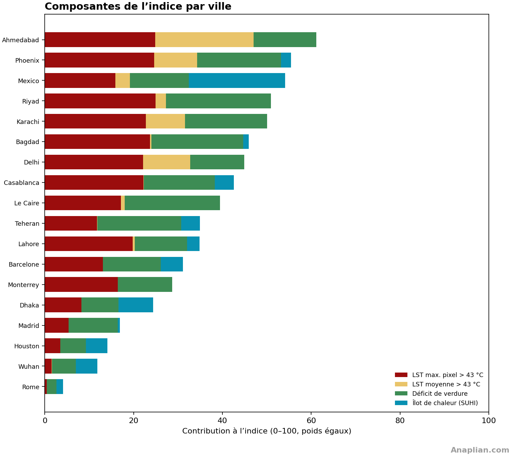
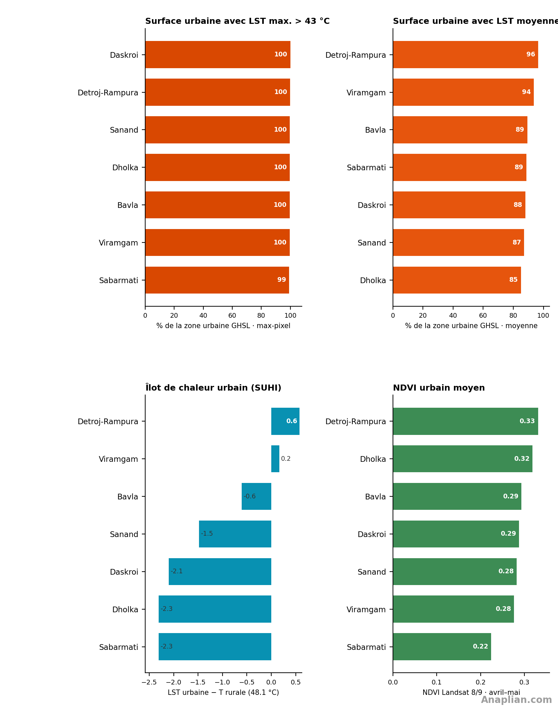

1. Introduction
La hausse soutenue de la température moyenne et de sa variabilité — plus de jours extrêmes, des vagues plus longues — pèse sur les peuplements humains. Le corps dissipe la chaleur par rayonnement, convection et surtout évaporation de la sueur. Quand l’air et les surfaces qui rayonnent empêchent cette perte, la température corporelle monte, le cœur travaille plus pour envoyer le sang vers la peau, eau et électrolytes se perdent. L’issue peut être l’épuisement, le coup de chaleur ou une décompensation cardiovasculaire et rénale. La chaleur nocturne, typique des îlots urbains, réduit la récupération du sommeil. Le risque est plus élevé chez les personnes âgées, malades chroniques, travailleurs en extérieur et habitants de logements mal ventilés ou sans ombre.
Le but de cet indice est de quantifier cette charge de chaleur de surface et de la rendre comparable, pour voir où se concentre la vulnérabilité et quels traits urbains la favorisent : revêtement, hangars, déficit de verdure et îlots de chaleur par rapport à l’environnement. Il ne remplace ni la démographie ni la surveillance épidémiologique ; il ordonne le territoire selon l’exposition de surface, avec une métrique fixe d’une ville à l’autre.
La comparaison opère à deux échelles. Entre villes, un même nombre dimensionne le problème face à d’autres qui appliquent déjà de bonnes pratiques ou illustrent des solutions à la concentration de chaleur. Dans chaque ville, les divisions politico-administratives — à Ahmedabad, les talukas — localisent plus finement les zones problématiques et désignent autorités et population directement concernées.
Par disponibilité des données et comparabilité, nous retenons quatre couches Landsat. Trois sont de température de surface : le maximum de la période, la moyenne des observations et l’îlot de chaleur, le différentiel entre une zone de référence proche, rurale ou moins urbanisée, et la température de la zone. La quatrième est un indice de végétation (NDVI) qui entre inversé : on pénalise un verdissement plus faible, parce que la végétation a un effet de refroidissement net.
2. Position dans l’indice
Ahmedabad occupe la 1re place sur 18 villes mesurées en avril et mai 2026, avec un indice de vulnérabilité climatique (IVC) de 61.1 sur 100. Elle arrive en tête parce que presque tout le tissu urbain dépasse 43 °C au max-pixel (99 %) et à la moyenne du composite (89 %). La référence rurale est elle-même d’environ 48 °C, donc le SUHI est de -1.7 °C et n’ajoute rien : c’est une chaleur de fond, pas un îlot classique ville–campagne. Phoenix (55.4) suit.

Dans le district, les 7 talukas tiennent dans une bande étroite (58–63). Sabarmati arrive en tête (IVC 63) : vieille ville, riverfront et toits denses le long du Sabarmati. Viramgam, Detroj-Rampura, Sanand, Daskroi et Bavla suivent à trois points : chefs-lieux périurbains, hangars GIDC et asphalte de route. Dholka arrive dernière (58), un peu plus verte, pas un refuge frais.
Le classement est presque plat parce que le climat fixe le plancher : le rural GHSL atteint déjà ~48 °C, donc z_SUHI est nul dans la plupart des talukas. Il reste z_LST max., z_LST moyenne et un déficit de verdure modéré. L’ombre, les toits froids et les arbres comptent encore pour les gens ; ils bougent à peine un indice de ville quand l’environnement dépasse déjà 43 °C.
Mexico, troisième du classement des villes, est le schéma inverse : un îlot de chaleur fort sur une référence rurale fraîche. Ahmedabad, c’est la charge de pré-mousson du Gujarat, avec un plan d’action chaleur pionnier que cet indice ne note pas.
La couverture du sol dans les cinq talukas au plus fort IVC, ce sont toits de tôle, hangars industriels, asphalte de route et peu de canopée. Sabarmati est un toit urbain continu le long du fleuve. Viramgam et Detroj-Rampura sont des chefs-lieux sur plaine chaude : revêtement du bourg, lots nus, verdure agricole hors masque urbain. Sanand ajoute hangars GIDC, usines auto et cours de chargement. Daskroi est la ceinture est d’entrepôts et d’anneau. Le Sabarmati et les champs périurbains ne compensent pas la dalle que voit l’indice.
3. Subdivisions à l’IVC le plus élevé
Parmi les 296 subdivisions politiques des 18 villes de l’indice comparable, les 7 talukas d’Ahmedabad entrent dans le top 25 : Sabarmati (11e, IVC 63), Viramgam (13e, IVC 62), Detroj-Rampura (18e, IVC 61), Sanand (19e, IVC 60), Daskroi (20e, IVC 60), Bavla (21e, IVC 60), Dholka (25e, IVC 58). La ville est première parce que tout le district est un plancher haut, pas parce qu’un quartier sature le SUHI. Le graphique des composantes montre z_LST max. et z_LST moyenne près de 1,0 et z_SUHI à zéro : une plaine chaude, pas un îlot urbain.


4. Quatre méthodes
Métrique comparable ivc-l4-v1. IVC = 100 × moyenne de zmax, zmoy, zNDVI inv et zSUHI. Ville : IVC 61.1 · SUHI -1.7 °C · T rurale 48.1 °C · 32 scènes · 11.3 obs./pixel · ~11 h 05 heure locale (5 h 35 UTC).
1. LST maximale par pixel
Température de surface maximale. Landsat 8 et 9 Collection 2 niveau 2, bande 10 (ST_B10), 1er avril–31 mai 2026. 32 scènes ; survol ~11 h 05 heure locale (5 h 35 UTC). Masque par pixel du remplissage, des nuages, des ombres et des LST hors 0–80 °C. LST = 0,00341802×DN + 149 − 273,15. Maximum des observations valides (11.3 obs./pixel). Superposition et indice : fraction urbaine > 43 °C.
2. LST moyenne des observations
Température de surface moyenne des observations. Même collection et même masque. Moyenne des scènes valides. La carte colore à partir de 35 °C ; l’indice utilise la fraction urbaine > 43 °C.
3. Végétation (NDVI)
Végétation. NDVI = (PIR − rouge)/(PIR + rouge), SR_B5 et SR_B4. Moyenne de la période (32 scènes, ~11 h 05 heure locale (5 h 35 UTC)). Verdure urbaine : NDVI ≥ 0.30 dans GHSL SMOD ≥ 21. Dans l’indice, il entre inversé sur une échelle fixe 0.05–0.55.
4. Îlot de chaleur (SUHI)
Îlot de chaleur de surface. SUHI = LST moyenne du pixel − T rurale. T rurale = 48.1 °C, GHSL 2020 SMOD 11–13 à l’intérieur du polygone (3977 km² ruraux). Superposition : SUHI > 8 °C. z_SUHI = min(max(SUHI urbain, 0) / 15, 1).
5. Température de surface maximale par pixel (> 43 °C)

6. Température de surface, moyenne des observations (> 35 °C)

7. Végétation (NDVI)

8. Îlot de chaleur (pixel − rural)

9. Quatre éléments du sous-indice

Superficie 4780 km² · urbaine GHSL 795 km² (17 %) · LST max. > 43 °C : 99 % · LST moyenne > 43 °C : 89 % · SUHI urbain -1.7 °C · verdure 35 % · IVC ville 61.1.
10. Tableau des talukas
| # | Taluka | IVC | LST max. > 43 °C | LST moyenne > 43 °C | SUHI °C | NDVI urbain | Verdure | Obs./pixel |
|---|---|---|---|---|---|---|---|---|
| 1 | Sabarmati | 63.2 | 99% | 89% | -2.3 | 0.22 | 21% | 15.2 |
| 2 | Viramgam | 62.2 | 100% | 94% | 0.2 | 0.28 | 32% | 8.0 |
| 3 | Detroj-Rampura | 61.0 | 100% | 96% | 0.6 | 0.33 | 57% | 8.0 |
| 4 | Sanand | 60.1 | 100% | 87% | -1.5 | 0.28 | 41% | 11.3 |
| 5 | Daskroi | 60.1 | 100% | 88% | -2.1 | 0.29 | 41% | 13.8 |
| 6 | Bavla | 60.1 | 100% | 89% | -0.6 | 0.29 | 42% | 9.4 |
| 7 | Dholka | 57.8 | 100% | 85% | -2.3 | 0.32 | 51% | 17.0 |
11. Talukas
1. Sabarmati
Taluka urbaine du fleuve et de la vieille ville (IVC 63). Presque tout le max-pixel et 89 % de la moyenne urbaine dépassent 43 °C. Le Sabarmati ne refroidit pas la dalle : toits denses, quais et peu de verdure (NDVI 0,22). Le SUHI est négatif car le rural du district est déjà à ~48 °C.
- IVC ivc-l4-v1 63.2 / 100
- LST max. > 43 °C 99% urbain · 50.6 °C
- LST moyenne > 43 °C 89% urbain · 45.8 °C
- SUHI urbain -2.3 °C vs T rurale 48.1 °C
- NDVI urbain 0.22 · 21% · 293.6 km² (88%) · 15.2
Dans la taluka : vieille ville, riverfront du Sabarmati et toits continus ; l’eau du fleuve ne compense ni le béton ni la tôle. Le manque de canopée et l’asphalte des quais font que 89 % de la moyenne urbaine dépasse 43 °C.


2. Viramgam
Bourg sur plaine chaude (IVC 62). 100 % du max-pixel urbain et 94 % de la moyenne franchissent 43 °C. Peu de sol urbain GHSL (6 %), mais ce sol est asphalte de chef-lieu et tôle dans un périurbain déjà chargé en chaleur de fond.
- IVC ivc-l4-v1 62.2 / 100
- LST max. > 43 °C 100% urbain · 55.8 °C
- LST moyenne > 43 °C 94% urbain · 48.2 °C
- SUHI urbain 0.2 °C vs T rurale 48.1 °C
- NDVI urbain 0.28 · 32% · 53.4 km² (6%) · 8.0
Au chef-lieu : asphalte de bourg et toits de tôle sur une plaine qui dépasse déjà 43 °C en avril–mai hors ville. L’« urbain » est un îlot de revêtement dans une mer chaude, pas un contraste frais.


3. Detroj-Rampura
Ceinture périurbaine agricole (IVC 61). La part de moyenne > 43 °C est la plus haute du district (96 %). Lots, sol nu et toits ; le NDVI 0,33 est le plus vert des talukas, et le composite ne descend toujours pas sous 43 °C.
- IVC ivc-l4-v1 61.0 / 100
- LST max. > 43 °C 100% urbain · 55.9 °C
- LST moyenne > 43 °C 96% urbain · 48.6 °C
- SUHI urbain 0.6 °C vs T rurale 48.1 °C
- NDVI urbain 0.33 · 57% · 32.3 km² (9%) · 8.0
Dans le bourg : lots, sol nu et toits ; la végétation agricole n’entre pas dans l’indice urbain. D’où 96 % de moyenne > 43 °C malgré un NDVI un peu plus haut.


4. Sanand
Couloir industriel (IVC 60). Hangars du GIDC, usines auto et cours. 100 % du max-pixel urbain > 43 °C ; le SUHI reste négatif : les hangars sont aussi chauds que la plaine périurbaine, pas plus.
- IVC ivc-l4-v1 60.1 / 100
- LST max. > 43 °C 100% urbain · 53.2 °C
- LST moyenne > 43 °C 87% urbain · 46.6 °C
- SUHI urbain -1.5 °C vs T rurale 48.1 °C
- NDVI urbain 0.28 · 41% · 117.7 km² (15%) · 11.3
Sur le couloir GIDC : hangars, cours et usines auto. Béton de toiture et asphalte de quai ; le périurbain n’est pas plus frais que le hangar.


5. Daskroi
Anneau est de la ville (IVC 60). Entrepôts, route et lotissements. 100 % du max-pixel et 88 % de la moyenne urbaine > 43 °C, verdure 0,29 qui ne coupe pas la dalle de l’anneau.
- IVC ivc-l4-v1 60.1 / 100
- LST max. > 43 °C 100% urbain · 51.4 °C
- LST moyenne > 43 °C 88% urbain · 46.0 °C
- SUHI urbain -2.1 °C vs T rurale 48.1 °C
- NDVI urbain 0.29 · 41% · 119.1 km² (19%) · 13.8
Sur l’anneau est : entrepôts, route et lotissements ouverts. La dalle périurbaine d’Ahmedabad est le motif : toit, cour et peu d’arbres.


6. Bavla
Axe sud de hangars et de route (IVC 60). 100 % du max-pixel urbain > 43 °C et 89 % de la moyenne. Asphalte de poids lourds et toits industriels ; le périurbain n’offre pas de référence fraîche.
- IVC ivc-l4-v1 60.1 / 100
- LST max. > 43 °C 100% urbain · 54.9 °C
- LST moyenne > 43 °C 89% urbain · 47.5 °C
- SUHI urbain -0.6 °C vs T rurale 48.1 °C
- NDVI urbain 0.29 · 42% · 99.9 km² (13%) · 9.4
Sur l’axe sud : hangars, remorques et route. L’asphalte de fret et les toits industriels maintiennent la moyenne urbaine près de 89 % au-dessus de 43 °C.


7. Dholka
La taluka la moins extrême (IVC 58), encore dans le top 25 mondial. Un peu plus de verdure (NDVI 0,32) et 85 % de moyenne > 43 °C. Le plancher du district est déjà haut : ce n’est pas « frais », c’est moins de dalle.
- IVC ivc-l4-v1 57.8 / 100
- LST max. > 43 °C 100% urbain · 53.5 °C
- LST moyenne > 43 °C 85% urbain · 45.8 °C
- SUHI urbain -2.3 °C vs T rurale 48.1 °C
- NDVI urbain 0.32 · 51% · 79.4 km² (8%) · 17.0
Au chef-lieu de Dholka : un peu plus de verdure et encore 85 % de moyenne > 43 °C. Le « frais » relatif du district : moins de hangars, pas un oasis.


12. Pourquoi Ahmedabad est en Priorité 2
La Priorité 2 suit le même découpage — plus de deux millions d’habitants en 18–42 °N — et le même cadre danger × exposition × vulnérabilité, un cran sous les six villes de tête. Elle ne remplace pas Delhi ou Karachi : elle les complète. Lahore, Dhaka et Ahmedabad concentrent la croissance des personne-jours de chaleur extrême en Asie du Sud (Tuholske 2021) ; Phoenix est la référence ECOSTRESS des brûlures sur chaussée (49–60 °C) déjà utilisée dans le style cartographique du projet ; Téhéran apporte une mégapole semi-aride en bassin fermé ; Monterrey est le pendant sec-industriel de Mexico.
La métrique est la même ivc-l4-v1 et la fenêtre reste avril–mai 2026, pour qu’un IVC 60 dans un town de Lahore soit comparable à Iztapalapa ou à un urban village de Phoenix. À Lahore, Ahmedabad et Dhaka cette fenêtre est pré-mousson ou saison chaude. À Phoenix et Monterrey le maximum annuel est juin–août ; elles entrent au printemps à dessein pour ne pas casser l’échelle fixe. Ahmedabad a en outre un plan d’action chaleur pionnier en Inde : l’indice mesure l’exposition de surface, pas le succès du plan.
Ahmedabad est le référent indien de l’adaptation : elle a eu le premier plan d’action chaleur du pays, mais l’exposition de surface reste très élevée. Le découpage utilise les talukas du district à moins de 55 km du centre (Sabarmati, Daskroi, Sanand et périurbain), pas le SIR de Dholera. L’IVC mesure la chaleur de surface, pas le succès du plan.